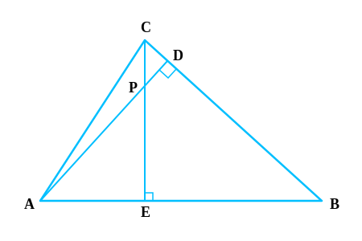

1. State which pairs of triangles in Fig. are similar. Write the similarity criterion used
by you for answering the question and also write the pairs of similar triangles in the symbolic form.
(i) ∆ABC (Angles 60, 80, 40) and ∆PQR (Angles 60, 80, 40)

∠A = ∠P = 60°
∠B = ∠Q = 80°
∠C = ∠R = 40°
Corresponding angles are equal.
By AAA Similarity Criterion (AAA Similarity):
∆ABC ~ ∆PQR
(ii) ∆ABC (Sides 2, 3, 2.5) and ∆PQR (Sides 6, 5, 4)

ABQR = 24 = 12
BCRP = 2.55 = 12
CAPQ = 36 = 12
Sides are proportional. By SSS Similarity Criterion (SSS
Similarity):
∆ABC ~ ∆QRP
(iii) ∆LMP (Sides 2.7, 3, 2) and ∆DEF (Sides 5, 6, 4)

MPDE = 24 = 12
LPDF = 36 = 12
LMEF = 2.75 ≠12
Sides are not proportional.
Not similar.
(iv) ∆MNL (M=70, MN=2.5, ML=5) and ∆PQR (Q=70, PQ=5, QR=10)

MNPQ = 2.55 = 12
MLQR = 510 = 12
Included Angle M = Angle Q = 70°.
By SAS Similarity Criterion (SAS Similarity):
∆MNL ~ ∆PQR
(v) ∆ABC (A=80, AB=2.5, BC=3) and ∆DEF (F=80, DF=5, EF=6)

ABDF = 2.55 = 12
BCEF = 36 = 12
Angle A = 80°. Angle F = 80°.
However, Angle A is not included between AB and BC. Angle F is included between DF and EF.
The condition for SAS is not satisfied.
Not similar.
(vi) ∆DEF (D=70, E=80) and ∆PQR (Q=80, R=30)

In ∆DEF, ∠F = 180° - (70° + 80°) = 30° (Angle Sum Property).
In ∆PQR, ∠P = 180° - (80° + 30°) = 70° (Angle Sum Property).
∠D = ∠P = 70°
∠E = ∠Q = 80°
∠F = ∠R = 30°
By AAA Similarity Criterion (AAA Similarity):
∆DEF ~ ∆PQR

2. In Fig., ∆ODC ~ ∆OBA, ∠BOC = 125° and ∠CDO = 70°. Find ∠DOC, ∠DCO and ∠OAB.
∆ODC ~ ∆OBA, ∠BOC = 125°, ∠CDO = 70°.
∠DOC, ∠DCO and ∠OAB.
∠DOC + ∠BOC = 180° (Linear Pair)
∠DOC + 125° = 180° ⇒ ∠DOC = 55°
In ∆ODC: ∠DCO + ∠CDO + ∠DOC = 180° (Angle Sum Property)
∠DCO + 70° + 55° = 180°
∠DCO = 180° - 125° = 55°
Since ∆ODC ~ ∆OBA, corresponding angles are equal.
∠OAB = ∠OCD (Corresponding parts of similar triangles)
So, ∠OAB = 55°
∠DOC = 55°, ∠DCO = 55°, ∠OAB = 55°.

3. Diagonals AC and BD of a trapezium ABCD with AB || DC intersect each other at the point
O. Using a similarity criterion for two triangles, show that OAOC = OBOD.
Trapezium ABCD, AB || DC. Diagonals intersect at O.
OAOC = OBOD
In ∆OAB and ∆OCD:
AB || DC (Given)
∠OAB = ∠OCD (Alternate Interior Angles)
∠OBA = ∠ODC (Alternate Interior Angles)
By AA Similarity Criterion (AA Similarity):
∆OAB ~ ∆OCD
Corresponding sides are proportional:
OAOC = OBOD
Hence Proved.

4. In Fig., QRQS = QTPR and ∠1 = ∠2. Show that ∆PQS ~ ∆TQR.
QRQS = QTPR and ∠1 = ∠2.
∆PQS ~ ∆TQR.
In ∆PQR: ∠1 = ∠2 (i.e., ∠PQR = ∠PRQ).
So PQ = PR (Sides opposite to equal angles are equal).
Given: QRQS = QTPR
Substitute PR = PQ:
QRQS = QTPQ
Invert both sides: \n QSQR = PQQT
Now in ∆PQS and ∆TQR:
PQQT = QSQR
∠PQS = ∠TQR (= ∠1) is common.
By SAS Similarity Criterion (SAS Similarity):
∆PQS ~ ∆TQR.

5. S and T are points on sides PR and QR of ∆ PQR such that ∠P = ∠RTS. Show that ∆RPQ ~
∆RTS.
∆PQR with points S on PR, T on QR such that ∠P = ∠RTS.
∆RPQ ~ ∆RTS.
In ∆RPQ and ∆RTS:
∠R is common (Common Angle).
∠RPQ = ∠RTS (Given).
By AA Similarity Criterion (AA Similarity):
∆RPQ ~ ∆RTS.

6. In Fig., if ∆ABE ≅ ∆ACD, show that ∆ADE ~ ∆ABC.
∆ABE ≅ ∆ACD.
∆ADE ~ ∆ABC.
Since ∆ABE ≅ ∆ACD (Given):
AB = AC (CPCT)
AE = AD (CPCT) ⇒ AD = AE
Divide equations: ADAB = AEAC
In ∆ADE and ∆ABC:
ADAB = AEAC
∠DAE = ∠BAC (Common Angle)
By SAS Similarity Criterion (SAS Similarity):
∆ADE ~ ∆ABC.

7. In Fig., altitudes AD and CE of ∆ ABC intersect each other at the point P. Show that:
(i) ∆AEP ~ ∆CDP
∠AEP = ∠CDP = 90° (Altitudes)
∠APE = ∠CPD (Vertically Opposite Angles)
By AA Similarity:
∆AEP ~ ∆CDP.
(ii) ∆ABD ~ ∆CBE
∠ADB = ∠CEB = 90° (Altitudes)
∠ABD = ∠CBE (Common Angle B)
By AA Similarity:
∆ABD ~ ∆CBE.
(iii) ∆AEP ~ ∆ADB
∠AEP = ∠ADB = 90° (Altitudes)
∠PAE = ∠BAD (Common Angle A)
By AA Similarity:
∆AEP ~ ∆ADB.
(iv) ∆PDC ~ ∆BEC
∠PDC = ∠BEC = 90° (Altitudes)
∠PCD = ∠BCE (Common Angle C)
By AA Similarity:
∆PDC ~ ∆BEC.

8. E is a point on the side AD produced of a parallelogram ABCD and BE intersects CD at F.
Show that ∆ABE ~ ∆CFB.
Parallelogram ABCD. E on AD produced. BE intersects CD at F.
∆ABE ~ ∆CFB.
In Parallelogram ABCD, ∠A = ∠C (Opposite angles of parallelogram).
AE || BC. So ∠AEB = ∠CBF (Alternate Interior Angles).
In ∆ABE and ∆CFB:
∠A = ∠C
∠AEB = ∠CBF
By AA Similarity Criterion (AA Similarity):
∆ABE ~ ∆CFB.

9. In Fig., ABC and AMP are two right triangles, right angled at B and M respectively.
Prove that:
(i) ∆ABC ~ ∆AMP
In ∆ABC and ∆AMP:
∠ABC = ∠AMP = 90° (Given)
∠BAC = ∠MAP (Common Angle A)
By AA Similarity Criterion (AA Similarity):
∆ABC ~ ∆AMP.
(ii) CAPA = BCMP
Since ∆ABC ~ ∆AMP (Proved above):
Corresponding sides are proportional.
CAPA = BCMP
Hence Proved.
10. CD and GH are respectively the bisectors of ∠ACB and ∠EGF such that D and H lie on
sides AB and FE of ∆ABC and ∆EFG respectively. If ∆ABC ~ ∆FEG, show that:
(i) CDGH = ACFG
∆ABC ~ ∆FEG. CD bisects ∠C, GH bisects ∠G.
Since ∆ABC ~ ∆FEG:
∠A = ∠F (Corresponding Angles).
∠C = ∠G (Corresponding Angles).
Since CD and GH are bisectors:
∠ACD = 12 ∠C and ∠FGH = 12 ∠G.
So ∠ACD = ∠FGH.
In ∆ACD and ∆FGH:
∠A = ∠F
∠ACD = ∠FGH
By AA Similarity (AA Similarity):
∆ACD ~ ∆FGH
So CDGH = ACFG
Hence Proved.
(ii) ∆DCB ~ ∆HGE
∠B = ∠E (Since ∆ABC ~ ∆FEG)
∠BCD = ∠HGE (Halves of equal angles)
By AA Similarity:
∆DCB ~ ∆HGE.
(iii) ∆DCA ~ ∆HGF
Refer to proof in part (i) above.
We established ∆ACD ~ ∆FGH, which is same as ∆DCA ~ ∆HGF.
Proved.

11. In Fig., E is a point on side CB produced of a isosceles triangle ABC with AB = AC.
If AD ⊥ BC and EF ⊥ AC, prove that ∆ABD ~ ∆ECF.
Isosceles ∆ABC with AB = AC. AD ⊥ BC, EF ⊥ AC.
∆ABD ~ ∆ECF.
Since AB = AC, ∠B = ∠C (Angles opposite equal sides).
In ∆ABD and ∆ECF:
∠ADB = ∠EFC = 90° (Given altitudes)
∠ABD = ∠ECF (Since ∠B = ∠C)
By AA Similarity:
∆ABD ~ ∆ECF.

12. Sides AB and BC and median AD of a triangle ABC are respectively proportional to sides
PQ and QR and median PM of ∆ PQR. Show that ∆ABC ~ ∆PQR.
ABPQ = BCQR = ADPM. AD and PM are medians.
∆ABC ~ ∆PQR.
Since AD is median, BC = 2BD. Since PM is median, QR = 2QM.
BCQR = 2BD2QM = BDQM
In ∆ABD and ∆PQM:
ABPQ = ADPM (Given)
BDQM = ABPQ (From above)
So ABPQ = BDQM = ADPM
By SSS Similarity: ∆ABD ~ ∆PQM.
Therefore, ∠B = ∠Q (Matching angles).
Now in ∆ABC and ∆PQR:
ABPQ = BCQR (Given)
∠B = ∠Q (Proved)
By SAS Similarity Criterion:
∆ABC ~ ∆PQR.

13. D is a point on the side BC of a triangle ABC such that ∠ADC = ∠BAC. Show that CA² =
CB.CD.
∆ABC with D on BC such that ∠ADC = ∠BAC.
CA² = CB.CD
In ∆ABC and ∆DAC:
∠C is common.
∠BAC = ∠ADC (Given).
By AA Similarity Criterion: ∆ABC ~ ∆DAC.
So corresponding sides are proportional:
CACD = CBCA
Cross multiply: CA × CA = CB × CD
CA² = CB.CD

14. Sides AB and AC and median AD of a triangle ABC are respectively proportional to sides
PQ and PR and median PM of another triangle PQR. Show that ∆ABC ~ ∆PQR.
ABPQ = ACPR = ADPM.
∆ABC ~ ∆PQR.
Produce AD to E such that AD = DE. Join CE.
Produce PM to N such that PM = MN. Join RN.
In quadrilateral ABEC, diagonals bisect each other (AD=DE by construction, BD=DC given).
So ABEC is a parallelogram. Thus AC = BE and AB = CE.
Similarly, PQNR is a parallelogram, so PR = QN and PQ = RN.
Given: ABPQ = ACPR = ADPM
Substitute AC = BE and PR = QN: ABPQ = BEQN
Also ADPM = 2AD2PM = AEPN
So in ∆ABE and ∆PQN:
ABPQ = BEQN = AEPN
So ∆ABE ~ ∆PQN (SSS Similarity).
Therefore ∠BAE = ∠QPN ...(1)
Similarly, ∆ACE ~ ∆PRN, so ∠CAE = ∠RPN ...(2)
Adding (1) and (2):
∠BAE + ∠CAE = ∠QPN + ∠RPN ⇒ ∠BAC = ∠QPR.
Now in ∆ABC and ∆PQR:
ABPQ = ACPR (Given)
∠A = ∠P (Proved)
By SAS Similarity Criterion:
∆ABC ~ ∆PQR.

15. A vertical pole of length 6 m casts a shadow 4 m long on the ground and at the same
time a tower casts a shadow 28 m long. Find the height of the tower.
Pole Height = 6 m, Pole Shadow = 4 m.
Tower Shadow = 28 m.
Tower Height (h).
The sun's inclination is constant at the same time, so the triangles formed by pole/tower and
shadows are similar (AA Similarity - Right angle and Sun's angle).
Ratio of heights = Ratio of shadows.
Height of PoleHeight of Tower = Shadow of PoleShadow of Tower
6h = 428
h = 6 × 284 = 6 × 7 = 42 m.
Height of tower is 42 m.

16. If AD and PM are medians of triangles ABC and PQR, respectively where ∆ABC ~ ∆PQR,
prove that ABPQ = ADPM.
∆ABC ~ ∆PQR. AD and PM are medians.
ABPQ = ADPM
Since ∆ABC ~ ∆PQR:
ABPQ = BCQR (Proportional sides)
And ∠B = ∠Q (Corresponding Angles).
Since D and M are midpoints:
BC = 2BD and QR = 2QM.
So BCQR = 2BD2QM = BDQM
In ∆ABD and ∆PQM:
ABPQ = BDQM
∠B = ∠Q
By SAS Similarity: ∆ABD ~ ∆PQM.
Corresponding sides are proportional:
ABPQ = ADPM
Hence Proved.